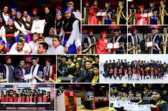

Activities of the Department:
Webinar Conducted On “What After Engineering”
The Department of Computer Science and Engineering,has organized motivational talk on “What After Engineering” on 12th September 2020 from 2pm to 4pm, through Zoom Online Platform. Students of V & VII semester A and B Sections from Department of CSE had participated in the motivational talk.

|
Webinar Conducted On “Data Science”
The Department of Computer Science and Engineering, has hosted Workshop on “Data Science” in association with KAALP Consulting on 9th September 2020 from 3pm to 5pm, through Zoom Online Platform with total 58 Participants. Students of V & VII semester A and B Sections from Department of CSE had participated in the Webinar
|  |

|
FDP on “Aspects of Effective Programming & Research”
Department of CSE conducted Faculty Development Program (FDP) on “Aspects of Effective Programming & Research”organized by KSIT & KSSEM in association with IEEE Bengaluru, section on 16th to18th January 2019 at KSSEM Bengaluru.